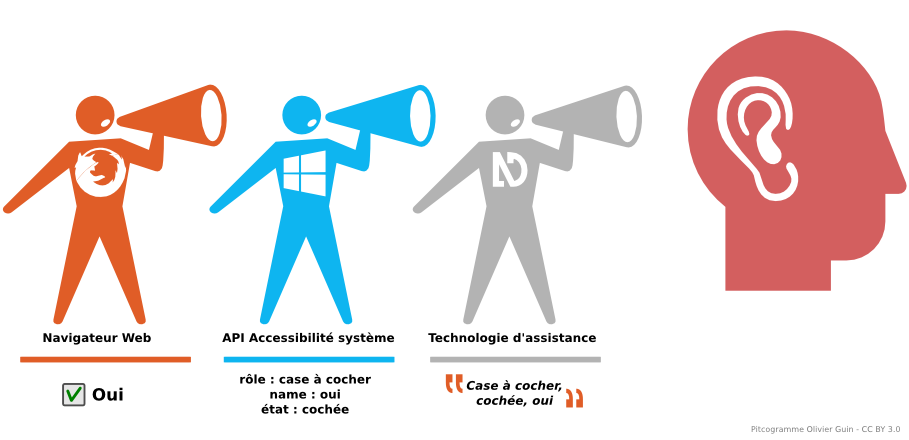
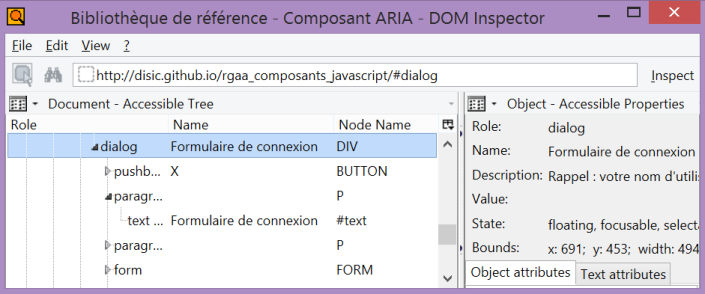
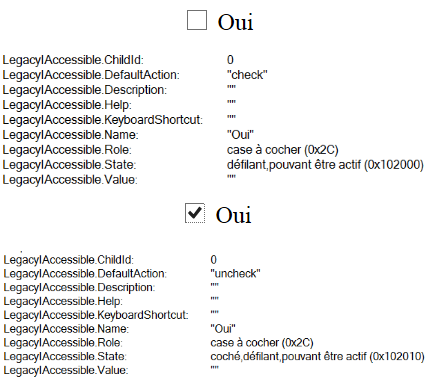
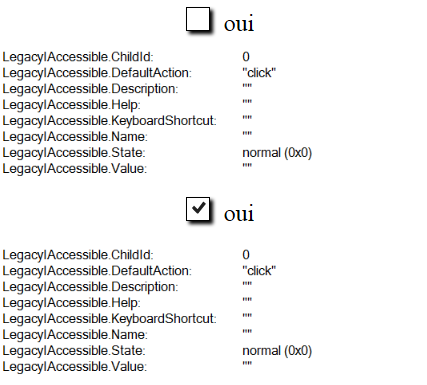
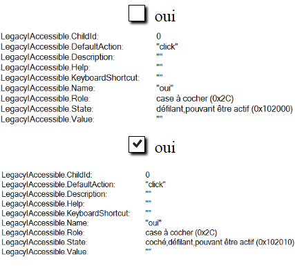

Introduction - cas utilisateurs
Un lecteur d'écran est un logiciel particulièrement complexe. Son rôle est de restituer vocalement l'ensemble des contenus affichés à l'écran. Il restitue le contenu textuel, mais également les éléments interactifs ainsi que l'ensemble des changements opérés sur ces derniers.
Outre ce rôle qui permet à un aveugle d'accéder à un ordinateur, il a pour charge de lui fournir les moyens d'interagir avec les contenus et les logiciels.
Pour ce faire, il s'appuie essentiellement sur les API d'accessibilité du système, au travers desquelles transitent l'ensemble des informations nécessaires et sur les logiciels eux-mêmes auxquels il va transférer des commandes utilisateurs.
La caractéristique d'un lecteur d'écran est d'être totalement dépendant des informations fournies par les APIs d'accessibilité, par les logiciels et par les producteurs des contenus et des fonctionnalités.
Les développeurs ont donc une responsabilité essentielle car ils sont le dernier maillon entre l'utilisateur et les contenus et fonctionnalités qu'ils proposent.
Dans ce système complexe, l'API ARIA va jouer un rôle crucial. C'est à travers elle que les développeurs vont fournir l'ensemble des informations sans lesquelles le contenu et ses fonctionnalités seront simplement inexploitables par l'utilisateur.
Du contenu à l'utilisateur

Notions de base simplifiées
 Comme indiqué plus haut, les systèmes d'exploitation fournissent des API pour centraliser toutes les informations sur les « objets » en cours d'utilisation. Ces informations, qui peuvent être très nombreuses, sont disponibles à tout moment et mises à jour dès que nécessaire.
Une partie de ces API est consacrée à l'accessibilité en utilisant des propriétés communes ou dédiées, par exemple le type, le nom, la valeur et les états.
Les logiciels ont pour charge de transmettre à l'API système les propriétés caractéristiques des objets qu'ils contrôlent.
Les navigateurs Web vont fournir en complément une arborescence d'objets, appelée l'accessible tree, mis à jour à chaque modification en s'appuyant sur le DOM et en ajoutant pour chaque objet les propriétés nécessaires à l'accessibilité.
Les lecteurs d'écran vont s'appuyer sur cette arborescence d'objets et sur les propriétés des éléments, fournis par le système, pour restituer les contenus.
« Case à cocher, non cochée, oui »
Pour comprendre de manière simplifiée comment fonctionne un lecteur d'écran, nous allons prendre l'exemple d'une case à cocher HTML :
<input type="checkbox" id="checkbox" />
<label for="checkbox">Oui</label>
 Étudions quelles sont les informations mises à disposition par le navigateur et l'API MSAA sous Windows (le principe est le même pour macOS ou Linux, seules les API diffèrent).
Le composant « case à cocher » (type="checkbox") est connu du navigateur. Ce dernier transmet à l'API les informations suivantes : un rôle « checkbox », un nom « oui », un état « défilant pouvant être actif » et une valeur nulle. Une case à cocher n'a pas de valeur, juste un état. À noter que l'état correspond ici à des caractéristiques héritées, communes à certains types d'éléments interactifs.
Lorsque l'utilisateur coche la case, le navigateur transmet l'information de mise à jour de l'état qui va
devenir « coché, défilant pouvant être actif ». « coché » signale qu'il est coché.
Le lecteur d'écran est donc en mesure de restituer le composant. NVDA vocalisera « case à cocher non cochée oui » pour l'état initial et « oui, case à cocher, cochée » lorsque l'utilisateur actionne le composant.
Chaque lecteur d'écran vocalise comme il le souhaite les composants. Il n'y a pas de règle en la matière, mais une origine commune : les informations transmises par le navigateur aux APIs système.
« Cliquable »
Regardons ce qui se passe maintenant avec le même composant simulé avec JavaScript et CSS :
<span></span> oui
 Pour le navigateur, un span vide, même avec une magnifique image d'une coche en propriété de fond, ne représente rien. Y compris lorsque l'image est modifiée par JavaScript suite à un clic sur le span. Il va donc transmettre la seule information dont il dispose : un événement (click) est implémenté sur l'objet.
C'est ce qu'indique l'API qui ne renvoie aucun type, un nom nul et un état « normal » qui signifie simplement que le navigateur n'a rien à dire sur cet élément.
La case à cocher simulée va être vocalisée par NVDA « cliquable », seule information disponible et, de fait, inutile. C'est là le quotidien des utilisateurs aveugles sur le Web.
« Case à cocher, cochée, oui »
Reprenons l'exemple précédent. Avec ARIA, nous allons pouvoir transmettre au lecteur d'écran par le navigateur et le système les informations nécessaires à la restitution de la case à cocher simulée.
<span role="checkbox" aria-checked="false" tabindex="0" aria-labelledby="foo"></span>
<span id="foo">Oui</span>
 role="checkbox" signale au navigateur le type d'élément. aria-checked transmet l'état. aria-labelledby permet de lier le passage de texte « Oui » pour nommer le composant. Enfin, tabindex="0" permet de rendre le composant opérable au clavier.
Avec JavaScript, il suffira de mettre à jour l'état aria-checked et de gérer le comportement au clavier en ajoutant à l'événement click un équivalent au clavier pour les touches ENTRÉE et ESPACE, car une case à cocher peut s'activer au clavier avec ces deux touches.
Regardons maintenant le résultat du point de vue de l'API système. Le composant retrouve les mêmes informations qu'une case à cocher HTML, le rôle « case à cocher », un nom « Oui » et les deux états possibles « défilant pouvant être actif » et « coché, défilant pouvant être actif ».
NVDA par exemple restituera cet élément de la manière suivante : « case à cocher, non cochée, oui » et « case à cocher, cochée, oui » de manière quasi identique à l'original HTML. L'utilisateur, lui, n'y verra aucune différence.
Le lecteur d'écran, HTML et ARIA
Il en va de même pour tout ce qui est affiché à l'écran, les paragraphes, les titres, les listes, les liens et ainsi de suite du plus simple au plus complexe. Lorsque ces objets correspondent à un type et un comportement connu, ce qui est le cas de tous les objets définis par la spécification HTML, la chaîne d'informations qui va du contenu à l'utilisateur est robuste et les restitutions sont cohérentes.
En revanche, lorsque le développeur ne fait pas correctement son travail, par exemple en utilisant des span stylés pour faire des titres, la chaîne d'information est rompue. La restitution est défaillante et les fonctionnalités d'interaction que proposent le lecteur d'écran sont inopérables.
De même, lorsque le développeur propose des composants « maison », le navigateur est dans l'incapacité de transmettre les informations nécessaires au lecteur d'écran.
Seul le recours à ARIA, en respectant strictement les définitions de rôles, d'états, de propriétés et les directives de comportement qui y sont associées, permettra de rendre ces composants inconnus accessibles à tous.
Note au sujet du nom accessible.
Il existe toujours plusieurs manières de donner un nom à un composant. Cela peut-être : une méthode native fournie par HTML par exemple la balise label pour un champ de formulaire ; une méthode complémentaire également fournie par HTML par exemple avec l'attribut title et des méthodes de surcharges fournies par l'API ARIA par exemple avec les propriétés aria-label ou aria-labelledby.
Le navigateur et le lecteur d'écran doivent donc effectuer un calcul pour savoir, lorsque plusieurs de ces méthodes sont utilisées, qu'elle est celle qui détermine le nom accessible d'un composant.
WCAG fournit un document qui détaille, pour chaque élément, la méthode de calcul du nom accessible. Cette méthode de calcul respecte toujours le même modèle : les propriétés ARIA lorsqu'elles sont présentes remplacent la méthode native HTML qui remplace la méthode complémentaire.
Il est important de bien comprendre ce principe pour gérer correctement les différentes méthodes permettant de nommer un composant en HTML, mais également de vérifier, lorsque plusieurs d'entre elles sont utilisées, qu'elles le sont de manière cohérente.
Le référentiel RGAA comporte à ce sujet quelques tests qui permettent de s'assurer qu'une propriété ARIA mal utilisée ne vient pas remplacer le nom légitime d'un composant.
Le lecteur d'écran et l'utilisateur
Afin de pouvoir faire interagir l'utilisateur avec le contenu, le lecteur d'écran va s'interfacer entre l'utilisateur et le navigateur de la manière suivante : lorsque l'utilisateur va utiliser une des commandes mises à sa disposition, le lecteur d'écran va commander le navigateur par exemple en déplaçant le focus sur tel ou tel élément. À l'inverse, lorsque l'utilisateur actionne un composant connu, par exemple le parcours d'une liste select, le lecteur d'écran va se contenter d'écouter ce que renvoie le navigateur en retour des actions de l'utilisateur.
Nous verrons par la suite que ce mode d'interaction peut avoir des conséquences importantes sur la conception de composants complexes.